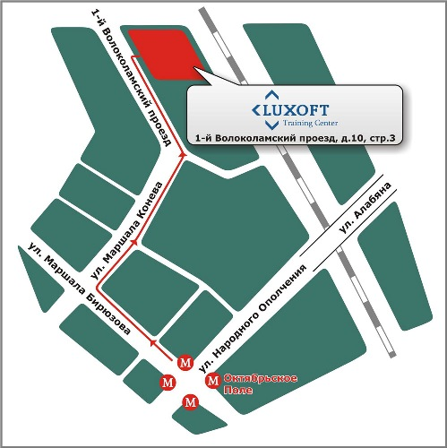

SetPageProperty("blue_title", "Курсы и обучение программированию в Москве");
$APPLICATION->SetPageProperty("title", "Обучение программированию Москва");
$APPLICATION->SetPageProperty("keywords", "обучение программированию Москва, обучение тестированию, курсы для программистов Московская область,обучение аналитиков Москва, Самара, Казань, Ростов-на-Дону");
$APPLICATION->SetPageProperty("description", "Адрес УЦ Luxoft: 1ый волоколамский проезд, д.10 стр.3, проезд автобусом № 105, 800, 4-я остановка от метро «1-й Волоколамский проезд»");
$APPLICATION->SetTitle("Курсы и обучение программированию в Москве");
?>
Телефоны: +7 (495) 609-6967, +7 (495) 967-8030 (доп. 6250, 6251, 5921, 6172).
Факс: +7 (495) 967-8032.
E-mail:
Адрес аудиторий: Россия, 123060 Москва, 1-й Волоколамский проезд, д.10, стр. 3 (бизнес-центр Диапазон отдельный вход под вывеской Luxoft напротив автобусной остановки).
На первом этаже бизнес-центра "Диапазон" есть столовая, в которой слушатели могут пообедать.
Аудитории


Проезд: от м. Октябрьское поле. Выход из метро: 1-й вагон из центра, из стеклянных дверей направо, затем налево и выход на улицу. Пройти 100 метров до остановки автобусов 105 и 800 или маршрутных такси 446м (остановка напротив магазина «Francesco Donni»). Доехать до офиса компании можно на автобусах № 105, 800 и маршрутном такси 446м, 4-я остановка от метро «1-й Волоколамский проезд». Остановка находится напротив входа в офис компании Luxoft. Для получения пропуска в здание необходимо охране предъявить паспорт.

IncludeComponent(
"bitrix:map.google.view",
".default",
Array(
"INIT_MAP_TYPE" => "ROADMAP",
"MAP_DATA" => "a:4:{s:10:\"google_lat\";d:55.80084700667103;s:10:\"google_lon\";d:37.49320806503278;s:12:\"google_scale\";i:15;s:10:\"PLACEMARKS\";a:1:{i:0;a:3:{s:4:\"TEXT\";s:20:\"Офис Luxoft-Training\";s:3:\"LON\";d:37.491273880005;s:3:\"LAT\";d:55.802631735403;}}}",
"MAP_WIDTH" => "745",
"MAP_HEIGHT" => "500",
"CONTROLS" => array(0=>"SMALL_ZOOM_CONTROL",1=>"TYPECONTROL",2=>"SCALELINE",),
"OPTIONS" => array(0=>"ENABLE_SCROLL_ZOOM",1=>"ENABLE_DBLCLICK_ZOOM",2=>"ENABLE_DRAGGING",3=>"ENABLE_KEYBOARD",),
"MAP_ID" => "gm_1"
)
);?>